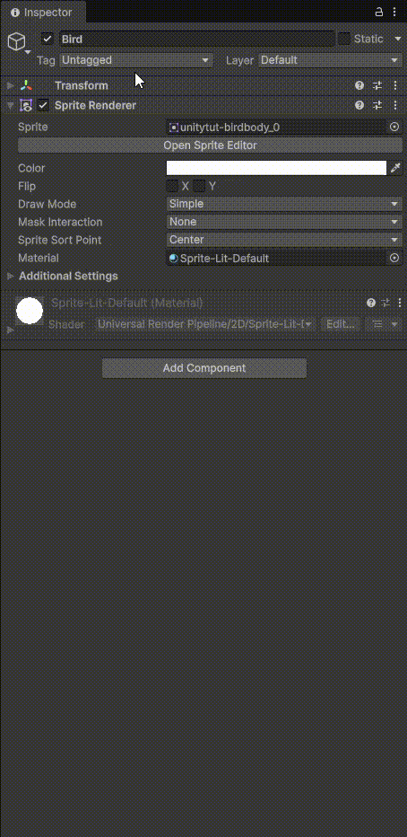
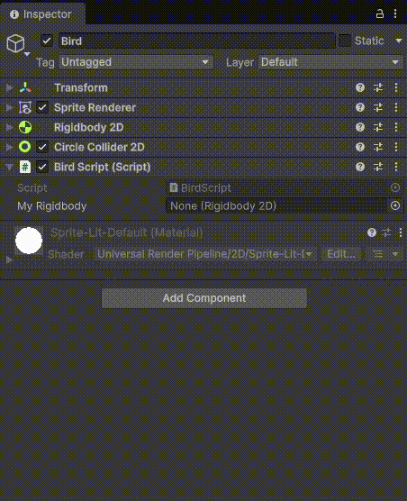

🏋️ Físicas y Código del juego
En Unity, las físicas son el sistema que simula cómo se comportan los objetos en el mundo del juego siguiendo leyes similares a las del mundo real: gravedad, fuerzas, colisiones, rebotes, fricción, etc.
En otras palabras, permiten que los objetos caigan, choquen, se deslicen o empujen de manera realista (o configurable).
Componentes principales de las físicas en Unity
1️⃣ Rigidbody
Es el componente que permite que un objeto sea afectado por la física (gravedad, fuerzas, impulso).
Si un objeto tiene Rigidbody:
- Puede caer por gravedad.
- Puede recibir fuerzas (
AddForce). - Reacciona a colisiones.
Sin Rigidbody, el objeto es estático y no se mueve por física.
2️⃣ Colliders
Definen la forma física del objeto para detectar colisiones.
Tipos comunes:
- Box Collider
- Sphere Collider
- Capsule Collider
- Mesh Collider
💡 Importante: Un objeto puede tener Collider sin Rigidbody (será un objeto fijo como el suelo).
3️⃣ Física 2D vs 3D
Unity tiene dos sistemas separados:
- Física 3D → usa
RigidbodyyCollider - Física 2D → usa
Rigidbody2DyCollider2D
No se mezclan entre sí.
Qué puedes hacer con las físicas
- Crear gravedad
- Detectar colisiones (
OnCollisionEnter) - Detectar triggers (
OnTriggerEnter) - Aplicar fuerzas
- Simular explosiones
- Crear plataformas móviles
- Hacer juegos de disparos, carreras o puzzles
Añadiendo físicas a nuestro Bërd

Para que nuestro juego tenga algo de realismo, tenemos que incluir la mecánica de las físicas, en este caso vamos a agregar el efecto de gravedad a nuestro personaje. Para ello, seleccionaremos el GameObject correspondiente en nuestro panel de jerarquía del juego (el de la izquierda) y en el panel del Inspector (a la derecha del todo) añadiremos un componente pinchando sobre el botón Add component para después seleccionar el componente llamado Rigibody 2D 👉 recuerda que puedes escribir el nombre del componente en el input del buscador de componentes que tienes justo encima del listado de componentesRenderizando el resultado
Si lo ejectuamos, veremos que el pájaro cae hacie abajo nada más arrancar el juego
Además de la gravedad, queremos que nuestro protagonista pueda interactuar con el entorno que posteriormente prepararemos, así que añadiremos un nuevo componente que tiene como nombre Circle Collider 2D a nuestro GameObject.
Añadiendo el collider
En cuanto agreguemos el componente Circle Collider 2D, veremos que en el editor ha aparecido, sobre el asset de nuestro pájaro, un círculo con borde de color verde 👉 ¡Vamos a ajustarlo!
Cada uno de los componentes tiene sus propias propiedades, desde el panel Inspector podremos cambiar los valores para dejarlo como más nos guste.
📋 Creando nuestro primer script del juego
Un script dentro de Unity es un componente que se le asigna a un GameObject como hemos visto anteriormente al añadir el componente de gravedad y el de las colisiones en 2D. En este caso tendremos que seguir los mismos pasos:
🐦 Seleccionar nuestro pájaro (GameObject) > Desde el inspector añadimos un componente > Seleccionamos el componente llamado New script > Desde el inspector, hacemos doble click sobre el script creado para que se abra VisualStudio Code
Analizando el código del script creado automáticamente
Veamos el código que se ha generado al añador el componente New Script
using UnityEngine;
public class BirdScript : MonoBehaviour
{
// Start is called once before the first execution of Update after the MonoBehaviour is created
void Start()
{
}
// Update is called once per frame
void Update()
{
}
}
UnityEngine es la biblioteca principal que contiene:
- GameObject
- Transform
- Rigidbody
- Debug
- MonoBehaviour
- etc.
Sin esta línea, no podrías usar casi nada de Unity.
2️⃣ public class BirdScript : MonoBehaviour
Estás creando una clase llamada BirdScript.
En Unity:
- Cada script es una clase
- Esa clase define el comportamiento de un objeto
👀 Ojo cuidao'
El nombre del archivo debe coincidir con el nombre de la clase.
3️⃣ : MonoBehaviour
Esto es MUY importante.
Significa que tu clase hereda de MonoBehaviour.
MonoBehaviour es la clase base que permite que el script:
- Se pueda añadir a un GameObject
- Use funciones como
Start()yUpdate() - Interactúe con el motor de Unity
Si quitas MonoBehaviour, el script ya no funcionaría como componente.
4️⃣ void Start()
Se ejecuta una sola vez, al comenzar el juego.
Es ideal para:
- Inicializar variables
- Obtener referencias (
GetComponent) - Configurar cosas al inicio
Ejemplo:
5️⃣ void Update()
Se ejecuta una vez por cada frame.
Si el juego va a 60 FPS → se ejecuta 60 veces por segundo.
Se usa para:
- Detectar input del jugador
- Mover objetos
- Comprobar condiciones constantemente
Ejemplo:
Eso movería el objeto continuamente.
🧠 Diferencia importante
| Método | Cuántas veces se ejecuta | Para qué sirve |
|---|---|---|
| Start | Una sola vez | Inicialización |
| Update | Cada frame | Movimiento y lógica continua |
Comunicación entre GameObject y sus componentes
Cuando añadimos el script a nuestro GameObject, éste no es capaz de comunicarse entre los distintos componentes que tiene asignados, así que lo primero que tenemos que hacer es establecer esa conexión desde nuestro Script de la siguiente manera:
using UnityEngine;
public class BirdScript : MonoBehaviour
{
// Hacemos que se comunique nuestro GameObject con sus propios componentes
// Para ello, añadimos las clases que necesitemos
public Rigidbody2D myRigidbody;
// Start is called once before the first execution of Update after the MonoBehaviour is created
void Start()
{
// con gameObject accedemos al objeto en si
// Podremos acceder a cada una de las propiedades, como en este caso
// .name es el nombre del objeto, que aquí lo establecemos a Bërd Lawson
// Desde el inspector de Unity, podremos ver cómo cambia de valor al ejecutar el juego
gameObject.name = "Bërd Lawson";
}
// Update is called once per frame
void Update()
{
}
}

Una vez hecho nuestro script, lo siguiente que tenemos que hacer es 👉enlazar👈 el componente de Rigidbody 2d con el script que acabamos de crear, así que pinchamos y arrastramos el componente Rigidbody 2D desde el inspector hasta el input que hemos creado en el script ➡️ 'My Rigidbody'.Recuerda 👇
- Creamos el script
- Abrimos el script haciendo doble click
- gameObject sirve para acceder al objeto en sí
- Los objetos tienen propiedades, las cuales pueden ser accesibles desde el script
- Esas propiedades pueden ajustarse desde el editor de Unity, una vez creadas
- Asigna el componente Rigidbody 2D en el input del script creado, en nuestro caso se llama My Rigidbody que lo encuetras en la línea 7 del script que hemos creado
🪁 Editando nuestro script enlazado con Rigidbody 2D
Lo siguiente que vamos a hacer es dotar a nuestro colega de la habilidad de volar, para ello ¿qué tendremos que hacer? simplemente contrarestar esa gravedad que le hemos impuesto al principio para que sea capaz de elevar su cuerpo.
En este código lo que hacemos es modificar la velocidad lineal de nuestro GameObject, haciendo que su vector velocidad (es un vector porque estamos hablando de un objeto en un mundo de 2 dimensions, en otras palabras, que hay un eje X y otro eje Y) se eleve (.up) 10 veces.
Pero ¿qué es lo que pasa? que como hemos puesto ese código en la función Update se va a ejectuar esa línea de código por cada frame del juego. Ejecuta y mira qué es lo que pasa con nuestro pequeño alado.
Vamos a solucionarlo con un if 👇
void Update()
{
if (Keyboard.current.spaceKey.wasPressedThisFrame)
{
myRigidbody.linearVelocity = Vector2.up * 10;
}
}
para poder hacer uso de Keyboard en nuestro código, deberemos importar la librería que toca, en este caso
Así pues, nuestro script tendría la siguiente pinta en este punto 👇using UnityEngine;
using UnityEngine.InputSystem; // Para poder usar Keyboard o cualquier tecla
public class BirdScript : MonoBehaviour
{
// Hacemos que se comunique nuestro GameObject con sus propios componentes
// Para ello, añadimos las clases que necesitemos
public Rigidbody2D myRigidbody;
// Creamos la variable flapStrength para poder controlarla desde Unity
public float flapStrength;
// Start is called once before the first execution of Update after the MonoBehaviour is created
void Start()
{
// con gameObject accedemos al objeto en si
// Podremos acceder a cada una de las propiedades, como en este caso
// .name es el nombre del objeto, que aquí lo establecemos a Bërd Lawson
// Desde el inspector de Unity, podremos ver cómo cambia de valor al ejecutar el juego
gameObject.name = "Bërd Lawson";
}
// Update is called once per frame
void Update()
{
// Si el usuario pulsa la tecla 'Espacio'
if (Keyboard.current.spaceKey.wasPressedThisFrame)
{
// Cambiamos la velocidad de nuestro objeto (el pájaro) con dirección arriba
// la multiplicamos por el valor 10 para que haya un cambio sustancial
myRigidbody.linearVelocity = Vector2.up * flapStrength;
}
}
}